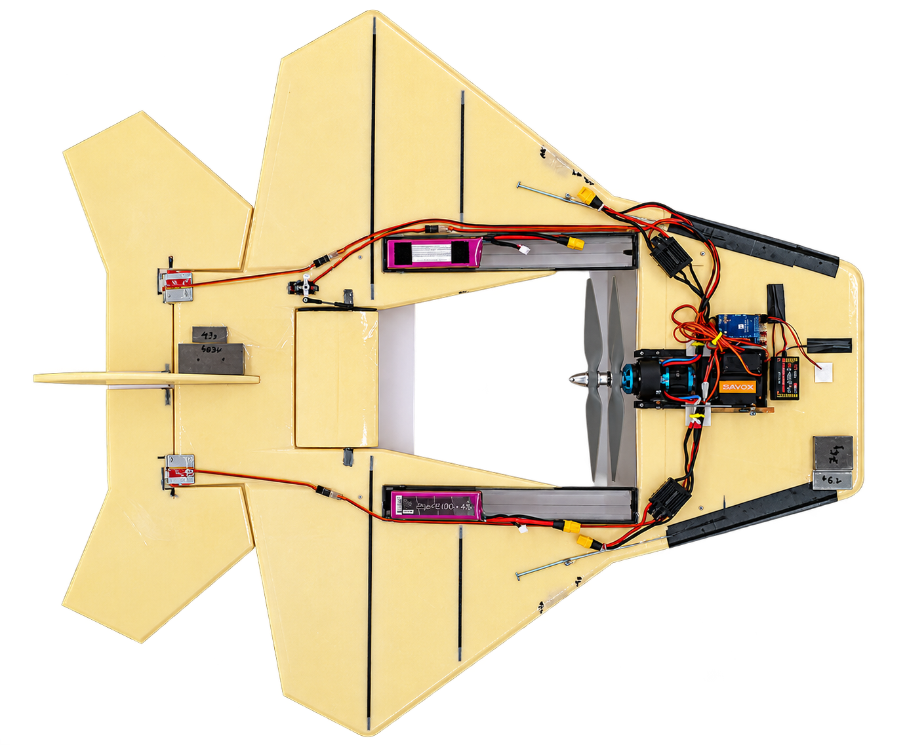
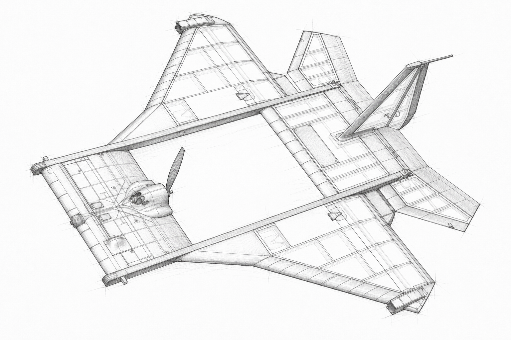
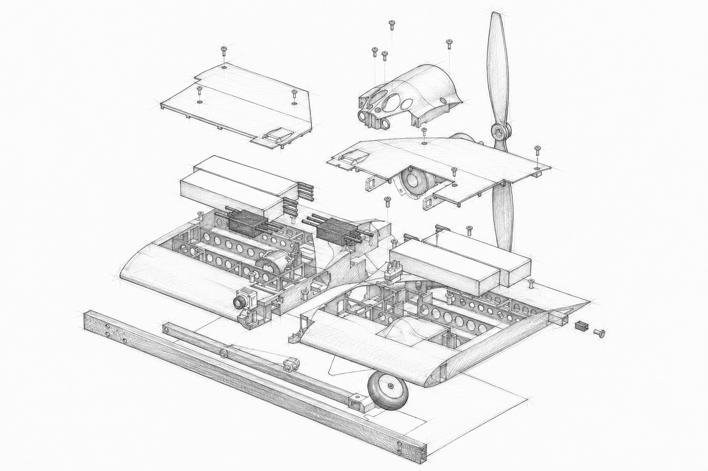

Engineering · 04
Drone Development
Designed and realized the motor plate and deployable nose landing gear for the Mobula 3.0, a high-performance vertical take-off UAV developed for the interception of unauthorized drones. The structural assembly integrated the propulsion system, batteries, electronics and landing functionality while meeting demanding requirements for low mass, high stiffness, component cooling and balanced weight distribution.
Field
Aerospace engineering
Period
2019
Focus
Mechanical design / Lightweight Design / Composite Structures
Overview
From a conventional UAV to a high-performance VTOL platform.
The Mobula platform evolved through several design iterations with substantially different operational requirements. The first iteration, Mobula X, was developed as a low-cost, scaled-down demonstrator using a conventional take-off configuration. It provided an early platform for developing and evaluating the overall aircraft concept.
Mobula 3.0, the third design iteration, was developed for a considerably more demanding use case: intercepting unauthorized drones entering restricted airspace. The aircraft was therefore designed as a highly maneuverable vertical take-off UAV with a powerful propulsion system, enabling rapid deployment without requiring a runway or dedicated launch infrastructure. For drone interception, Mobula 3.0 was equipped with two externally triggered net cannons. These allowed the operator to capture and disable another drone during an interception.
My responsibility within the larger development team was the mechanical design and realization of the motor plate and deployable nose landing gear. The motor-plate assembly formed a central structural module of the aircraft and had to integrate the propulsion system, batteries, electronic speed controllers, camera equipment and electrical interfaces while transferring mechanical loads into the longitudinal carbon-fibre structure.
The development followed a structured prototype-development process covering requirements definition, concept generation and evaluation, CAD design, material selection, manufacturing, assembly and iterative design optimization.

Key challenges
Balancing mass, stiffness, propulsion loads and thermal management.
The high thrust-to-weight requirements and VTOL configuration of Mobula 3.0 placed demanding constraints on the mechanical architecture. The motor plate was not simply a mounting component; it acted as an integrated load-bearing structure connecting the propulsion system and multiple aircraft subsystems to the main airframe.
A key challenge was achieving the required structural rigidity at minimum mass. The assembly had to withstand propulsion, maneuvering and landing loads while avoiding unnecessary structural weight. At the same time, the position of relatively heavy components such as the batteries and propulsion hardware had to be carefully selected to achieve an appropriate centre of gravity and overall weight distribution.
The compact packaging of high-power electrical components also made thermal management an important design consideration. Cooling paths had to be maintained around the electronic speed controllers, propulsion-related electronics and other heat-generating components without compromising structural stiffness or aerodynamic integration.
- Integration and load transfer of the high-power propulsion system
- Minimum structural mass under strict thrust-to-weight constraints
- High bending and torsional stiffness
- Controlled centre-of-gravity and component weight distribution
- Cooling of propulsion-related electronics and other electrical components
- Rapid battery replacement and component accessibility
- RF-transparent structures around antennas
- Integration into the aerodynamic envelope of the aircraft
- Development of a lightweight deployable nose landing gear

Solution
A lightweight composite structure with integrated propulsion, electronics and landing gear
The final motor-plate assembly integrated the propulsion system, batteries, electronics and deployable landing gear into a lightweight structural module. Carbon-fibre beams formed the primary load-bearing structure, while glass-fibre sheets provided additional stiffness and were used for external surfaces and around antennas due to their RF transparency.
A ribbed, thin-walled geometry reduced mass while maintaining structural rigidity and providing space for cooling and cable routing. Component placement was optimized for weight distribution, accessibility and thermal management.
For the VTOL configuration, I developed a spring-loaded deployable nose landing gear integrated into the motor plate. A remotely controlled servo released the mechanism before landing, while the stored spring energy provided the deployment force. Using the servo only as a trigger enabled a simple and lightweight mechanism with minimal actuator requirements.
Project report
Complete engineering report
Read the complete report covering requirements, concept development, CAD design, material selection, manufacturing, assembly and optimization of the motor plate and nose landing gear.

Reflection
What I took from the experience.
Mobula 3.0 gave me practical experience in lightweight aerospace design and system integration, where structural stiffness, mass distribution, propulsion, cooling and electronics packaging had to be considered simultaneously.
The project also demonstrated the importance of material-specific design: carbon fibre provided high specific stiffness for the primary structure, while glass fibre combined structural reinforcement with RF transparency around antennas. Developing and manufacturing the final assembly reinforced the value of designing not only for structural performance, but also for manufacturability, accessibility and reliable mechanical operation.